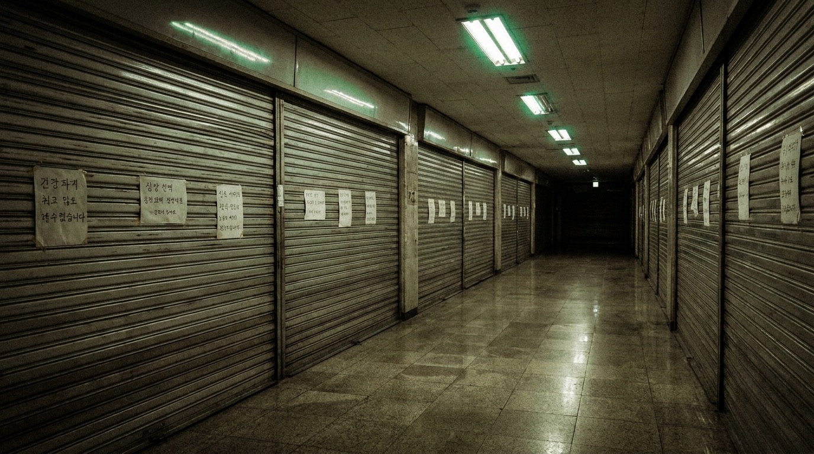

KR 레벨군은 수직으로 연결되어 있으며, 깊이 내려갈수록 더 오래전에 사라진 공간이 나타난다 (심도-연대 상관). 번호는 M.E.G. 한국 전초기지의 문서 등재 순서이며 심도 순서가 아니다.

| 번호 | 명칭 | 생존 난이도 | 요약 |
|---|---|---|---|
| 레벨 KR-0 | 「빈집」 | 등급 2 | 입주가 시작되지 않은 새 아파트 내부의 무한 반복. KR 레벨군의 관문. 상세 문서 있음 — 필독 |
| 레벨 KR-1 | 「지하상가」 | 등급 2 | 셔터가 반쯤 내려간 점포가 무한히 이어지는 지하 통로. 조명이 간헐적으로 소등된다. 쇼윈도에 엔티티 KR-5 다수 상주. 문서 작성 중 |
| 레벨 KR-2 | 「목욕탕」 | 등급 3 | 물이 빠진 대중탕. 온기와 안개는 남아 있다. 탕 바닥의 사람 모양으로 얇아진 자국들에 관한 보고 다수. 문서 작성 중 |
| 레벨 KR-4 | 「환승통로」 | 등급 1 | 첫차 직전의 지하철 환승통로. KR 레벨군에서 현실로 이어지는 출구가 가장 자주 열리는 레벨. M.E.G. 중간 캠프 소재. 문서 작성 중 |
| 레벨 KR-7 | 「모델하우스」 | — | [자료 없음 — 탐사조 미귀환으로 문서화 보류] |
| 레벨 KR-11 | 「극장」 | 등급 3 | 단관 극장. 상영은 계속되고 있으나 스크린을 정면에서 본 방랑자의 진술은 서로 일치하지 않는다. 문서 작성 중 |
| 레벨 KR-14 | 「1998」 | 등급 4 | 중층의 광대한 단층. 셔터 내린 점포가 지평선까지 이어지며, 셔터마다 같은 인사문이 붙어 있다. 엔티티 KR-9 상주. 통과 시 소음 금지. 문서 작성 중 |
| (지정 불가) | 「뒤안」 | 측정 불가 | 최심부의 방랑자 은어. 실재 여부 미확인. 하층 이하로 내려간 탐사조 중 귀환한 조가 없어 등재 보류. |